3D-Grafik – Illustration & Animation
Showreel
3D-Charaktere und ‑Szenen
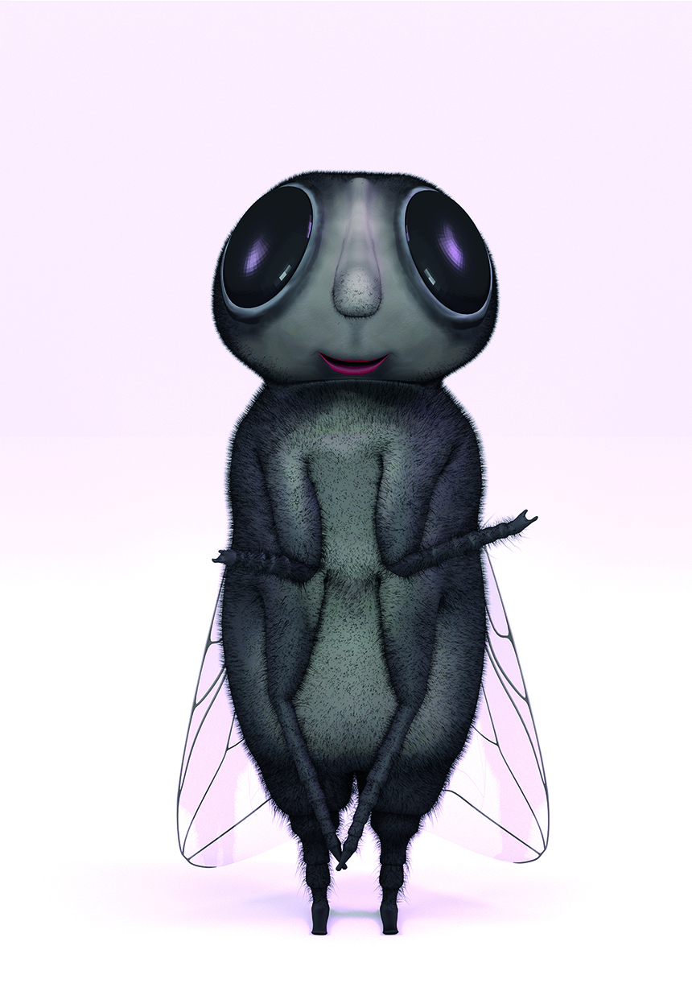

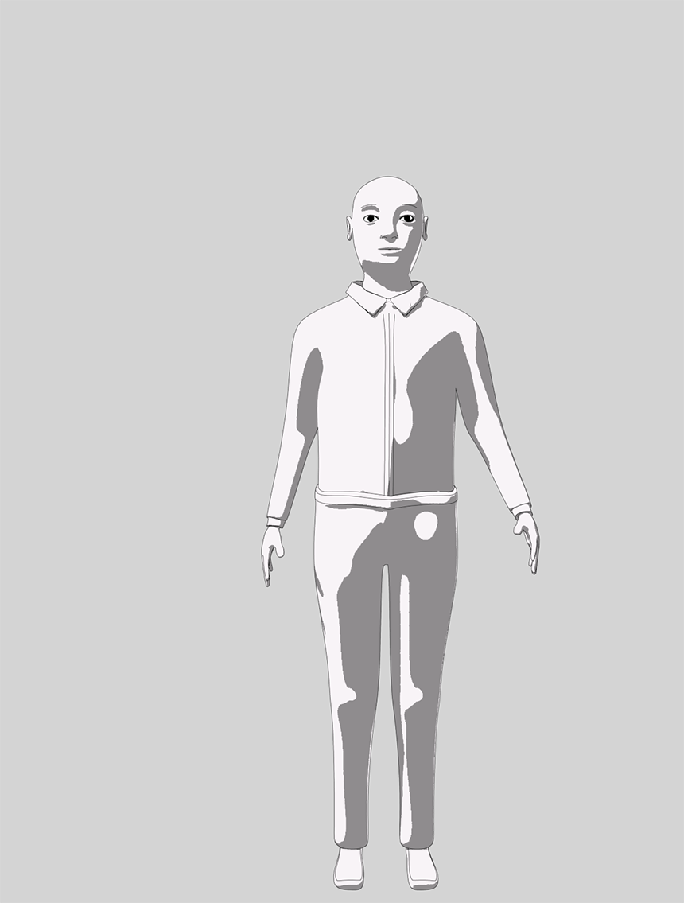
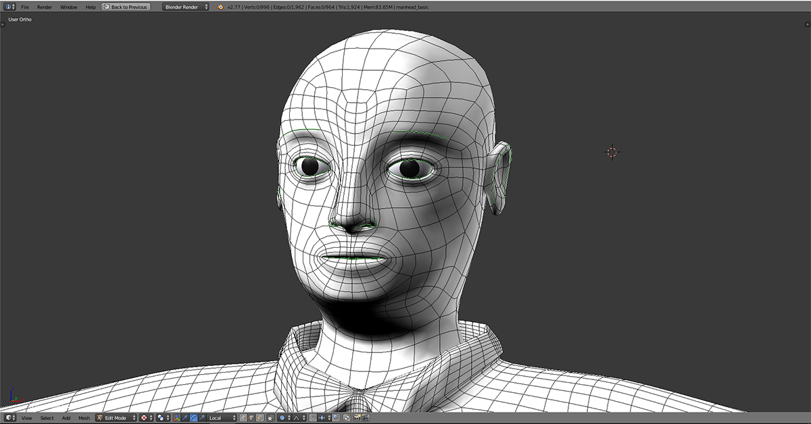
Huhn-Animation mit dem großartigen Modell und Rig des Nimble Collectives

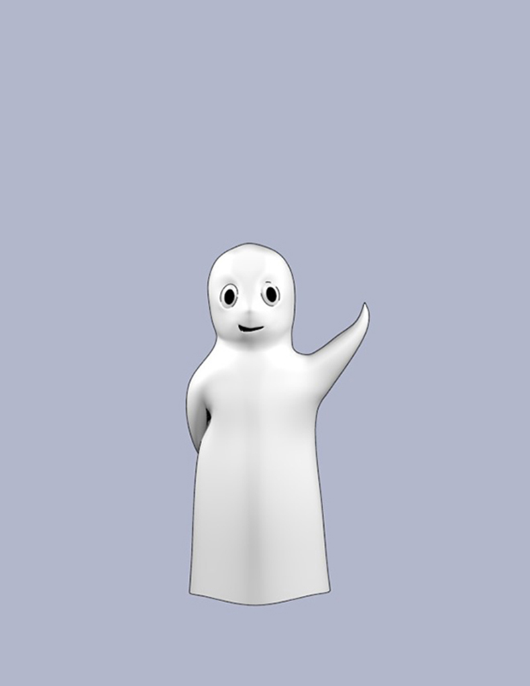

Elli Kuruş
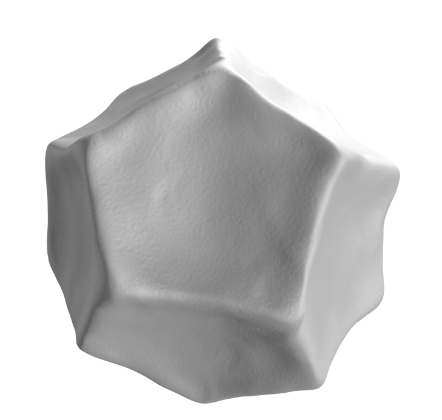Innerhalb des Künstlerkollektivs Elli Kuruş haben wir uns über einen längeren Zeitraum mit der Struktur der Platonischen Körper, ihren inhärenten historischen Aspekten und ihrer medialen Repräsentation auseinandergesetzt. Die Platonischen Körper vereinen in sich das Ideal von Harmonie und Logik und sind aufgrund ihres Aufbaus beliebt und leicht mittels 3D-Software zu generieren. Mit der Frage, in welchem Verhältnis der Mensch und geometrische, algorithmische und mathematische Perfektion stehen, haben wir die platonischen Körper per Hand modelliert, ohne Hilfswerkzeuge zu benutzen. Im Folgeschritt haben wir die Plastilin-Modelle mit dem 3D-Scanner gescannt und die Daten in Blender bearbeitet. Im Anschluss wurden und werden die handgemachten, digitalisierten Skulpturen in neue Zusammenhänge gesetzt, auch um durch deren transformierte mathematische Schönheit, den Anspruch, die Welt durch Reduktion und Logik zu präsentieren, genauer zu hinterfragen.
 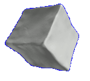
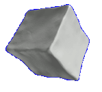


platonic bodies
Virtuelle Installation, 2015, Galerie ARTACKER, Berlin zusammen mit Elli Kuruş.


Monticello
3D-Modell Monticellos angefertigt für die Arbeit »Invisible Hand, The Great Book of...« von Elli Kuruş, in der Galerija Miroslav Kraljević, Zagreb, Kroatien 2016.
video loop
Monticello wurde von Thomas Jefferson selbst entworfen und war derart konzipiert, dass die Arbeit seiner Sklaven weitestgehend „unsichtbar“ wurde. Sämtliche Arbeitsräume waren im Keller und den Dependencies untergebracht, die Versorgung der Wohn- und Präsentationsräume verlief über schmale Wendeltreppen. Jefferson hatte einige innenarchitektonische Details entwickelt, um zu verhindern, dass beispielsweise während des Abendessens Sklaven anwesend waren. So ließ er einen Aufzug für Weinflaschen in die Seitenwände des Kamins einbauen, um diesen direkt aus dem Weinkeller von Sklaven befüllen zu lassen. Ebenso erfand er den Servierwagen, der außerhalb des Sichtfeldes der Speisenden bestückt wurde. Während unserer (Bild-)Recherchen zu Monticello fiel uns auf, dass auch in der gegenwärtigen visuellen Präsentation Monticellos (Briefmarken, Dollar-Note, diverses Bildmaterial im Internet und Büchern) der gesamte Arbeitsbereich des Gebäudes oft ausgespart wird. Daher haben wir uns entschlossen, in der Ausstellung einen ungewohnten Blick auf Monticello freizugeben, der die enorme Architektur der (Sklaven-) Arbeit, auf der das Anwesen aufgebaut war/ ist, sichtbar macht. Die animierte 360° Drehung des Modells ist als Videoloop eingebunden in eine mehrteilige Installation aus einem Servierwagen, einer 2-Dolllar-Note, Tusche-Zeichnungen, Internetkabeln, Seilrollen, californischem Rotwein, einem Künstlerbuch, künstlichen Fingernägeln und einer Plastilin-Pyramide. Elli Kuruş befragt innerhalb der Installation »Invisible Hand, The Great Book of...« verschiedene historische wie auch gegenwärtige Praktiken des „Unsichtbarmachens“ von Arbeit. So zeigt das ausgestellte Künstlerbuch die Spuren von Händen der Arbeiterinnen, die für Google Books Bücher einscannen. Im Normalfall werden die versehentlich mitgescannten Hände und Finger per Algorithmus entfernt, allerdings geschieht dies nicht immer fehlerfrei und manchmal bleiben die Spuren der „Handarbeit“ noch sichtbar. Elli Kuruş, hat den Prozess des „Unsichtbarmachens“ transformiert, den Inhalt der Bücher gelöscht und nur die mehr oder weniger sichtbaren Spuren der Hände bestehen gelassen. Die ausgewählten Bücher handelten dabei allesamt von Monticello, das einzige, was von ihrem eigentlichen Inhalt bleibt, ist ein Kupferstich des Anwesens in der Mitte des Buches und ein von Elli Kuruş verfasstes Gedicht.
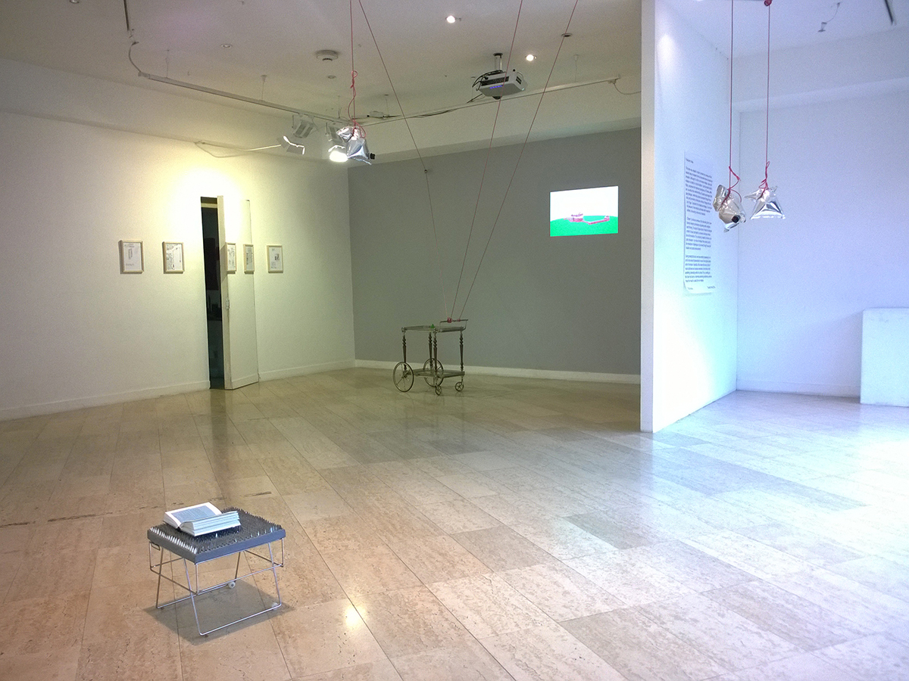


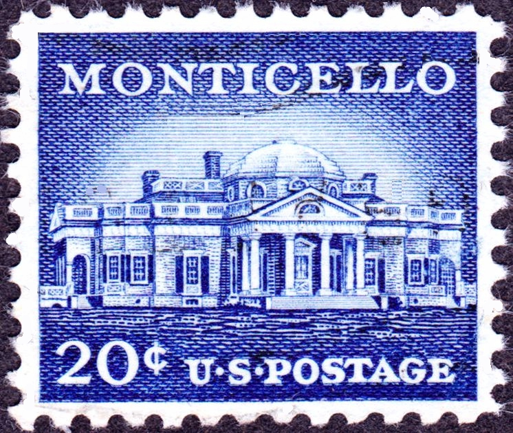 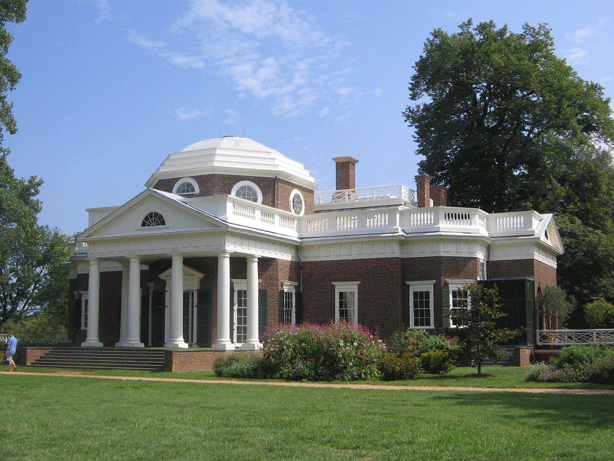 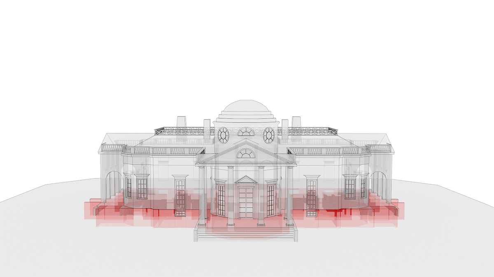
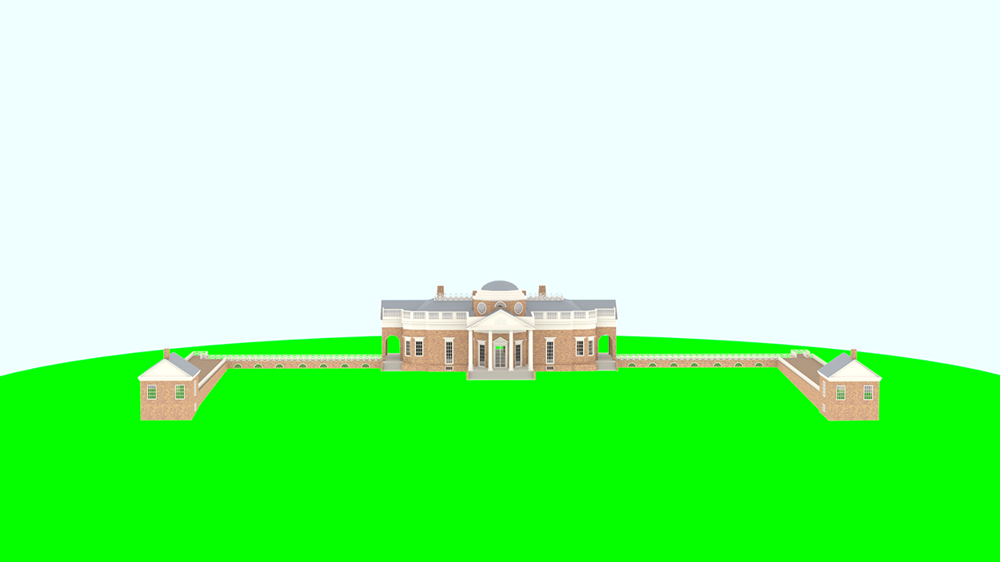
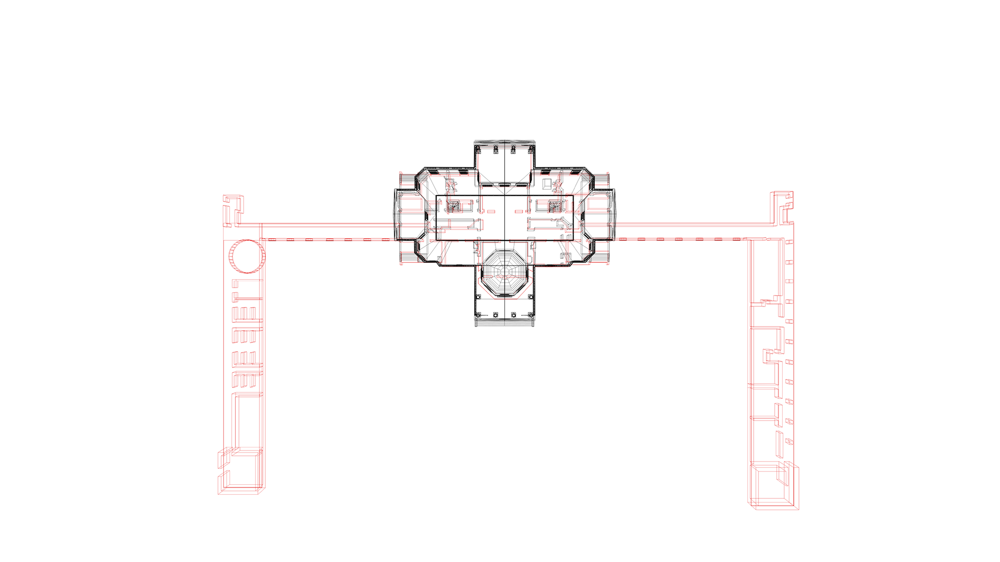
Thinking through animation
Im Rahmen des ICSC-INTERCITY/SWITCHCITY Austauschprojekts haben die beteiligten Künstlerkollektive unter anderem auch über Möglichkeiten, Wege und Grenzen von kollektivem Arbeiten diskutiert. Hier zu sehen sind Überlegungen in Form einer Animation bezüglich der Frage, wie angesichts des „agonistischen Pluralismus“ (Chantal Mouffe) in kollektiven (künstlerischen) Produktionen oder Projekten eine Entscheidung gefunden werden kann, oder ob das nicht ein Widerspruch in sich ist.
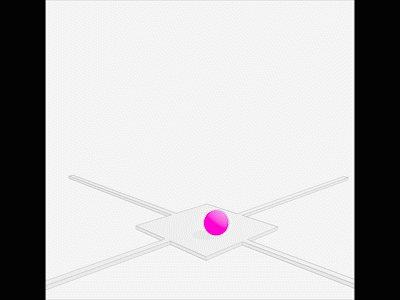
In Bezug auf die Animation stellt sich die Frage, ob nicht ein wesentliches Problem kollektiver Projekte die endlosen Diskussionen sind, die zu jedermanns Erschöpfung und Resignation führen. Was wäre, wenn es anstatt dessen viele pinke Bälle gäbe, die „zusammen erscheinen“ (Jean-Luc Nancy), ohne die Notwendigkeit, dass sie gespielt werden, sondern dass sie gleichzeitig bestehen und sich gegenseitig beeinflussen.
St. Gertrud
Work in Progress: St. Gertrud in Köln – eine gemeinsame Ausstellung von Künstlerinnen aus Köln, Paris und Leipzig
St. Gertrud ist bekannt für ihre außergewöhnliche Architektur, entworfen und gebaut wurde sie zwischen 1960-1965 von Gottfried Böhm. Ein Kunstwerk in bzw. für diese Kirche zu entwickeln, ist angesichts der imposanten brutalistischen Architektur eine besondere Herausforderung. Neben eindeutig religiösen Aspekten kann die besondere Atmosphäre, die die Architektur St. Gertruds hervorruft, hinsichtlich der eigenen künstlerischen Arbeit nicht negiert werden. Daher haben wir uns zu Beginn des Arbeitsprozesses darauf konzentriert, uns intensiv mit der Architektur und ihrer Struktur auseinanderzusetzen. Im Rahmen der Recherchearbeit haben wir eine künstlerische Analyse der Architektur mittels des in Blender modellierten Modells durchgeführt und verschiedene Richtungen, die unsere Arbeit(en) nehmen könnten, diskutiert.
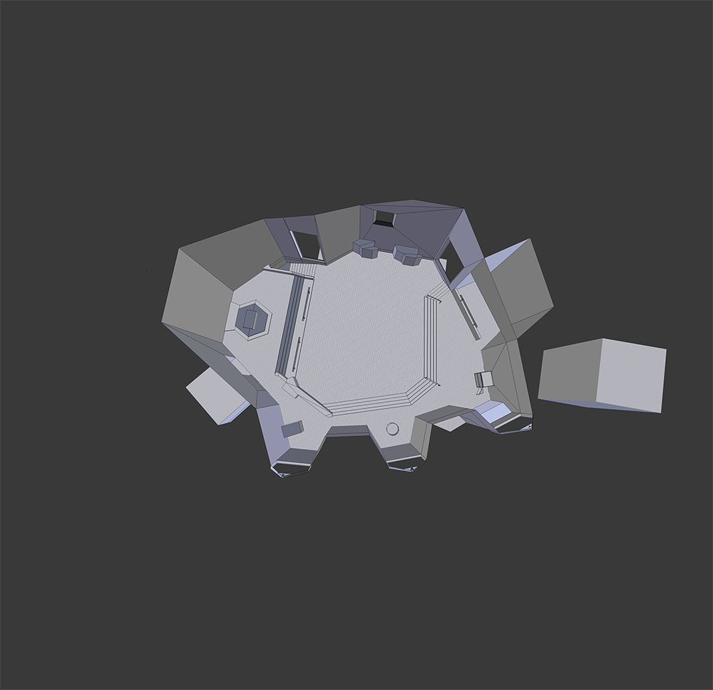


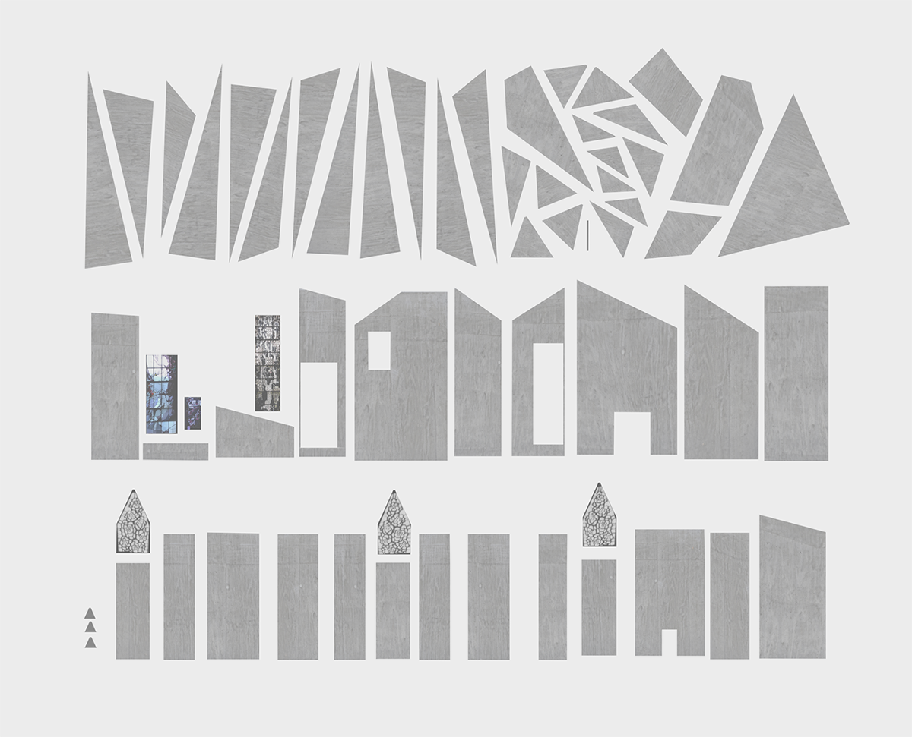 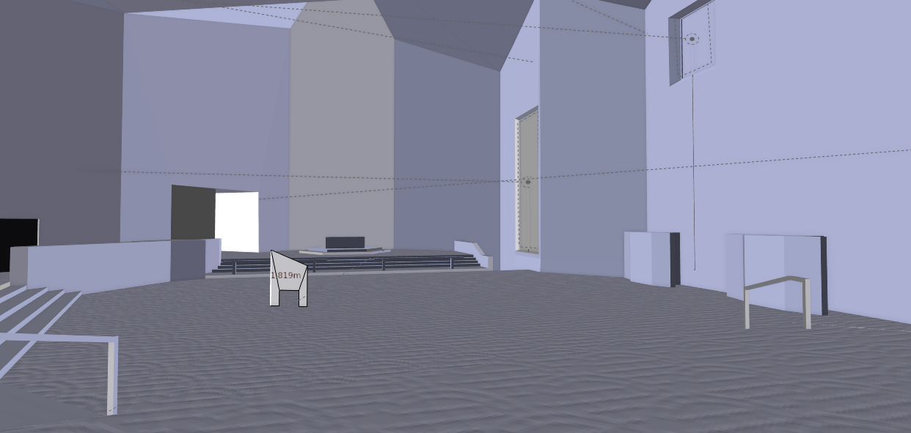 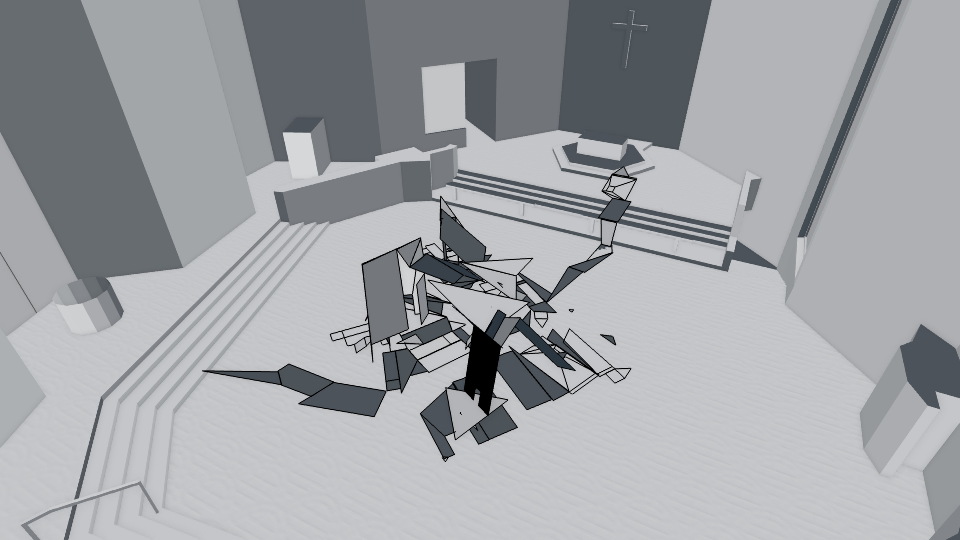


 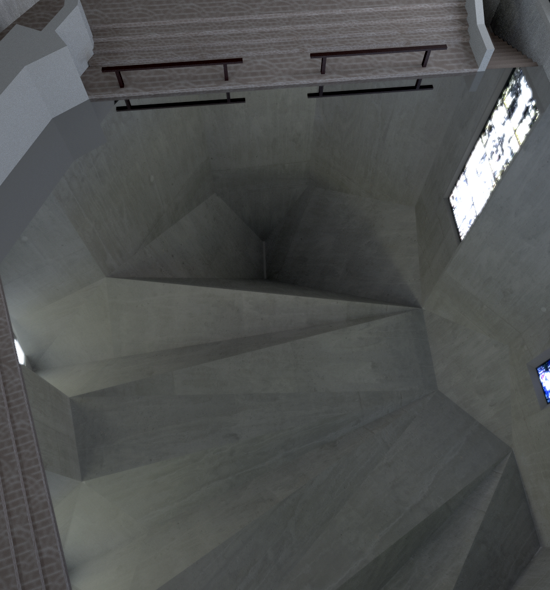
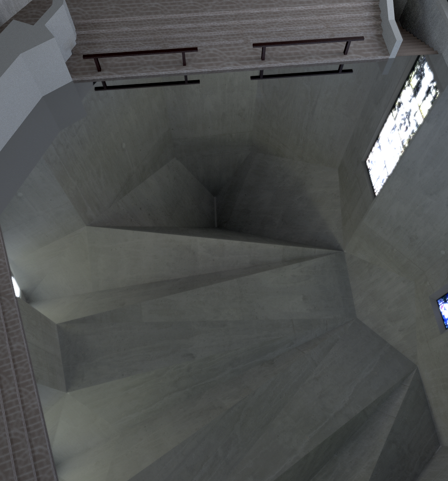
Dabei hat sich herausgestellt, dass das Arbeiten mit dem 3D-Modell in Blender mindestens zwei besondere Eigenschaften mitbringt: Zum einen den offensichtlichen Vorteil, Dimensionen von Gebäude und Kunstwerk miteinander in Relation zu setzen, um Realisierbarkeit und Wirkung zu überprüfen. Zum anderen aber auch die Möglichkeit, über das konkrete Arbeiten im Modell, indem einzelne Elemente bewegt, rotiert, gespiegelt oder aus ihrem Zusammenhang genommen werden, den eigenen Denkprozess zu öffnen und neue Sichtweisen zu entwickeln. Auch die Möglichkeit, Materialeigenschaften in Blender zu ändern, fungiert als Katalysator, um neue Wege einzuschlagen. So kann das Arbeiten mit Blender nicht nur als reiner Visualisierungsprozess betrachtet werden, sondern als künstlerischer Akt selbst verstanden werden. Die Ausstellung wird im März 2017 stattfinden
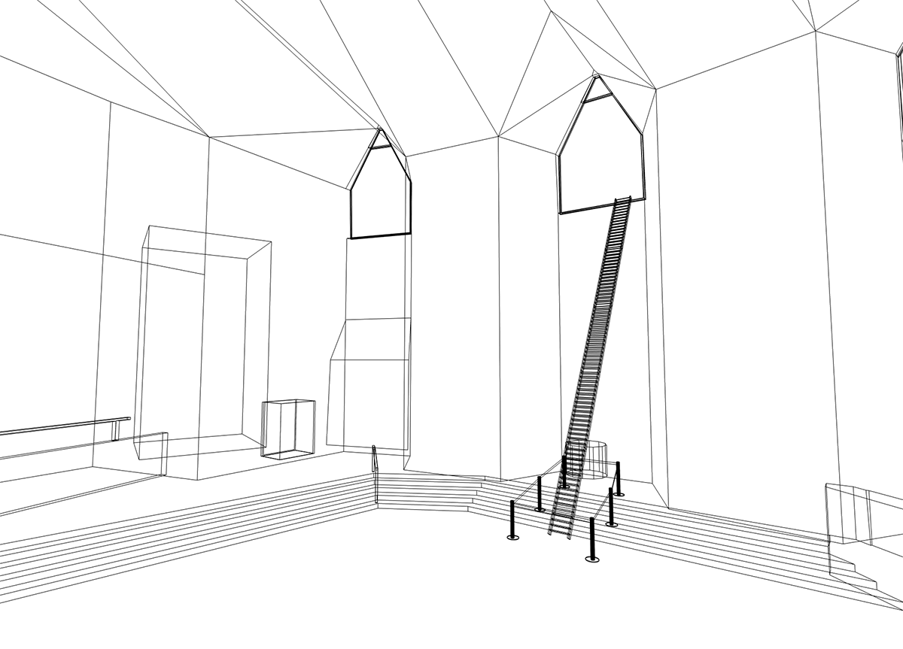


GRASSI Museum
Gestaltungsentwurf für das Foyer des GRASSI Museums für Angewandte Kunst anlässlich eines offenen Wettbewerbs im Frühjahr 2014. Im Fokus der Ausschreibung stand die Gestaltung des Foyers insbesondere für Kinder und Familien. Gesucht wurden Gestaltungskonzepte, die der Einstimmung auf den Museumsbesuch dienen, den Eingangsbereich inhaltlich mit der Ausstellung vernetzen und Neugier wecken.
Video-Präsentation für das Ausstellungskonzept „GRASSI für Kinder“
Unionsverlag
Rund um die Welt in 40 Jahren – Ausstellungsplanung und ‑gestaltung für den Unionsverlag im Foyer des Haus des Buches, Leipzig.
Die Ausstellung im Haus des Buches leuchtet hinter die Kulissen eines Verlages, der seit 40 Jahren Autoren aller Kontinente beheimatet und von Anfang an die üblichen Grenzen überschritt. Dokumente, Fotos und Hintergründe der Buchherstellung zeigen die Verlagsarbeit im Wandel der Jahrzehnte.
Grundlegende Voraussetzungen

- Eckdaten
- Haus des Buches Leipzig, 180qm Ausstellungsfläche im Foyer, öffentlich zugänglich, angegliederter Cafébetrieb
- Ausstellungsdauer: März/April 2015; Öffnungszeiten: Mo.–Do. 9–17 Uhr, Freitag 9–15 Uhr
vorhandenes Ausstellungsmobiliar, Hängemöglichkeiten und -bedingungen: Glasvitrinen und Stellwände, Haken und Aufhängungen, Rahmen divers, Hängemöglichkeiten an den Querschienen der Deckenverstrebung
Der Zugang zum Behindertenaufzug und die Türen zum Innenhof müssen frei zugänglich bleiben. Die Säulen sollten möglichst nicht involviert werden.
Planungsphase 1 – Texttafeln und Vitrinen


Planungsphase 2 – Entwurf, Gestaltung und Positionierung weiterer Ausstellungselemente


Planungsphase 3 – Anpassung der Ausstellungselemente an inhaltliche Veränderungen und technische Voraussetzungen


Realisierung